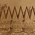
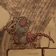
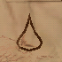
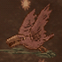
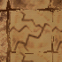
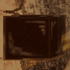

| トゲ

|
「トゲ」のとがった部分にふれると、ミスになります。 |
| ネズミ

| ふれると、ミスになります。アイビィと同じように、ツタで移動させることができます。 |
| 水滴

| 天井から落ちてくる「水滴」に当たるとミスになります。 |
| カラス

|
空を飛んでいる「カラス」にふれると、ミスになります。また、ツタで移動させることはできません。 |
ひび割れた
ブロック

| 「まんまる岩」をぶつけることで破壊できる壊れやすいブロックです。また、きりもみアタックや、無敵状態でも破壊できます。 |
固い
ブロック

| 「まんまる岩」をぶつけることで破壊できます。きりもみアタックや無敵状態では破壊できません。 |